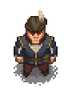

Euric
| This article is a stub. You can help Graveyard Keeper Wiki by expanding it. |
| Euric | |
|---|---|
 | |
Basic Information
| |
Location :
|
Souls room, Euric's Room |

Euric is the main NPC of the Better Save Soul DLC. He is an acquaintance of the Keeper, who shows us to the Souls room in the Morgue.
First appearing as a living, breathing 'corpse' in a bag, it obviously doesn't take long for the Keeper to notice the disruption. Once freed he explains himself, confessing to the Keeper about his sinful life and defiance of the Bishop's word, arguing that one could, in fact, rid themself of sin. Euric enlists the help of the Keeper, striving to cure himself of sin by using a past Keeper's Soul healing technology.
Quests
Gather special sin shards from all specific time visitors to cure Euric. note: each of the charged sin shards require the item you are tasked with collecting and one normal sin shard per visitor.
Bring a bottle of
Seed oil to unlock the hatch, which leads from the Souls room to Euric's Room.
Repairs
You have to repair all the furniture in Euric's Room. You'll also have to repair the equipment in the Souls room to proceed. Note that when building and repairing objects in the Souls room, the counter will increase.
Soul healing
Use the Soul extractor to extract a soul from a corpse, and you'll get a Harmed soul. Place it in the Soul healer and assign the selected organ(s). As a result, you will have a Healed soul, which can in turn be placed into the Soul portal, granting . You can hold these up to the limit of your .
Note: While souls from corpses can be healed as soon as the repair is done, in order to progress with the story-quests, you need to upgrade the Souls Healer with the Human Souls Repair - a chair for Euric to sit on. This is available only in the room's build menu.
Speak with Euric, and he'll say he needs charged shards of sin.
Deadly sins
First up is Pride - it could only be the Bishop. You need an Ode about how cool he is. When you have the Ode, you'll also need one shard of sin which will become a charged shard.
Speak to Euric for a healing session. Wait one day before talking to him again.
The next two can be done in any order.
Gluttony is the merchant. Go to Clotho to ask for the recipe for the sauce. Make it in the church workbench with 1x Seed Oil, 2x Egg, 1x Salt. Give to Merchant along with 1x Sin Shard which will become a charged shard.
Wrath is the Inquisitor. Give Clotho 2x Honey Jar to get the witches ashes. Give to Inquisitor along with 1x Sin Shard which will become a charged shard.
Speak to Euric for a healing session. Wait one day before talking to him again.
The next three can be done in any order.
Euric will have given you a note for Snake. Speak to him with the note in your inventory and with 1x Sin Shard in your inventory. You'll get a charged shard.
Also speak to Stargazer and Ms. Charm while having 1x Sin Shard in your inventory for each. You'll get a charged shard for each.
Repairs
Here is a list of the items needed to fix everything:
- Krezvold: 2 Planks, 4 Nails, 1 Wood repair kit
- Horadiric: 4 Flitch, 5 Nails, 2 Complex iron parts
- Basket eggs: 2 Sticks, 1 Wood repair kit
- 2 beehives: 2 Flitch, 3 Nails, 5 Bees each
- Adam's pottery wheel: 2 Flitch, 1 Stone, 3 Nails
- Thorn washcloth: 2 Sticks, 2 Rope
- Rosa's cow: 4 Ash
- Farmer's light: 2 Stones, 2 Simple iron parts, 1 Glass
Here are the totals:
- Planks 2
- Nails 18
- Flitch 6
- Sticks 4
- Stone 3
- Rope 2
- Ash 4
- Simple iron parts 2
- Complex iron parts 2
- Wood repair kit 2
- Bees 10
- Glass 1
| |||||||||||||||||||||||||||||